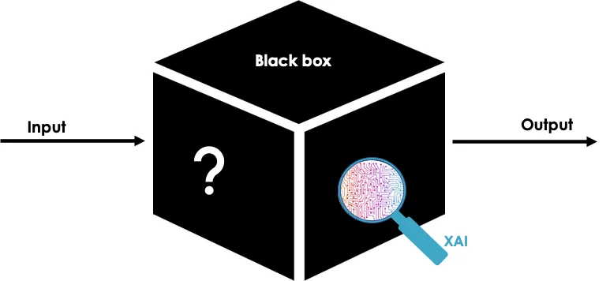

Label-Free Explainability
Label-Free Explainability for Unsupervised Models
Authors: Valentina Hu and Selma Zarga
Table of Contents
Why do we need explainability ?
Machine learning models are becoming increasingly capable of making advanced predictions. While models like linear regression are relatively easy to understand and explain, more complex models, often called “black boxes” due to their complexity, present challenges in explaining how they make predictions. These models can be problematic in highstakes applications such as healthcare, finance, and justice, where it’s crucial to justify decision-making. Additionally, in case of errors, it’s important to understand the origin in order to address and correct them.
“Explainability is the cornerstone of trust in black box models; without it, they remain inscrutable and unreliable.” - Yoshua Bengio
To tackle this challenge, the field of Explainable Artificial Intelligence (XAI) has emerged, offering various methods to enhance model transparency. Post-Hoc explainability methods exist, which intervene after the model has generated its results, enabling users to comprehend the reasoning behind specific decisions or predictions. These methods supplement the predictions of black box models with diverse explanations of how they arrive at their predictions.

While much of the work on explainability focuses on supervised models, where labels are available to interpret predictions, unsupervised learning models are trained without labels. This post will focus on these unsupervised, label-free cases. It is based on recent research conducted by Crabbé and van der Schaar in 2022, which explores the explainability of unsupervised models. They have developed two new methods to explain these complex models without labels. The first method highlights important features in the data, while the second identifies training examples that have the greatest impact on the model’s construction of representations.
Introduction
The entire post is focused on the quest for explainability of unsupervised models. In these models, no labels are assigned to our data, rendering the understanding of the model even more complicated due to the absence of explicit guidance on what the model is learning. In the supervised setting, users know the meaning of the black-box output they are trying to interpret. However, this clarity is not always available in machine learning. Therefore, elucidating concepts such as feature importance and example importance provides insights into why the model makes certain decisions or identifies specific patterns in the data.
Example importance refers to the significance or weight assigned by a model to individual examples (data points) within a dataset. In some models like decision trees or gradient boosting, each example may be assigned a weight based on its relevance or contribution to the overall learning process. These weights can influence how the model learns from the data and makes predictions.
Feature importance helps in understanding which features have the most influence on the model’s predictions. For example, in a diabetes prediction scenario, it would reveal whether factors like the patient’s weight, age, or hair color exert the most influence on the prediction.
When we identify the importance of examples and features, we gain insight into why the model made certain decisions.
Feature Importance
The feature importance method aims to explain the predictions of a black-box model by assigning an importance score to each feature (or attribute) of the input. This helps understand which features have the most influence on the model’s predictions. This method is developed based on a linear reasoning that is extended to label-free settings.
To understand how the label-free feature importance method works, let’s start by looking at the labeled case:
Labelled Feature Importance
The method proposes to combine the importance scores of different components of the model’s output by weighting them with the associated class probabilities. For each component of the model’s output, we multiply the importance score of the corresponding feature by the probability of that component.
These weighted importance scores are then combined to obtain the final importance score of each feature.
Let $ai(f_j;x)$ be the importance score of feature $x_i$ calculated with respect to the component $f_j$ of the model’s output. The method proposes to calculate the importance score $bi(f;x)$ for feature $x_i$ as follows:
$bi(f;x) = \sum_{j=1}^{d_Y} f_j(x) \times ai(f_j;x)$
Here, $f_j(x)$ represents the probability of class $j$, and $ai(f_j;x)$ is the importance score of feature $x_i$ for class $j$.
By weighting each importance score by the probability of the corresponding class, we take into account the contribution of each class to the overall importance of the feature. We can see that in the labeled case, the method is quite clear. Now, let’s move on to the label-free setting.
Label-Free Feature Importance
In this context, we consider a latent space $H$ of dimension $d_H$ where a black-box model $f:X \rightarrow H$ is given. The goal is to assign an importance score to each feature of the input $x$, even if the dimensions of the latent space have no clear relations with the labels.
We use a similar weighting formula for importance scores, where the components $f_j(x)$ do not correspond to probabilities but to neuron activations. The weighted sum is considered as an inner product in the latent space.
The method is developed using linear feature importance functions, and it retains the completeness property, meaning that the sum of importance scores equals the black-box prediction up to a baseline constant.
This approach provides a systematic way to compute feature importance in both labeled and label-free contexts, by using existing feature importance methods and adapting them to the specific context.
Exemple Importance
In this section, we discuss how we adapt methods for assessing the importance of individual training examples to a label-free scenario. These methods aim to quantify the impact of removing a specific example from the training dataset on the model’s performance.
Loss-Based Example Importance:
In supervised settings, loss-based methods evaluate the effect of removing an example by observing how it influences the model’s loss on a test example. Essentially, if removing an example leads to an increase in loss, it’s considered important, and vice versa. Mathematically, this can be expressed as:
$$ c_n(f_r; x) = \frac{1}{N} \sum_{n=1}^{N} r^T \left( L(z; \theta’) - L(z_n; \theta’) \right) $$
Where:
- $ c_n(f_r; x) $ is the importance score for example $ x_n $.
- $ f_r $ represents the relevant parameters of the model.
- $ L(z; \theta’) $ is the loss function evaluated on the test example $ z $.
- $ L(z_n; \theta’) $ is the loss function evaluated on the test example after removing $ x_n $.
- $ r $ is the gradient of the loss function with respect to the model’s parameters.
- $ N $ is the total number of examples in the training set.
Representation-Based Example Importance:
These methods analyze the latent representations of training examples to assess their importance. In supervised settings, this involves comparing a test example’s representation with those of the training set. The affinity between them is quantified by reconstructing the test example’s representation using a weighted combination of training representations. The weights are typically determined based on the nearest neighbors in the latent space or learned through optimization.
In the label-free setting, we can directly apply representation-based methods without modification, as they only rely on the latent representations learned by the model.
Overall, these methods provide insights into which training examples have the most influence on the model’s behavior, facilitating model interpretation and understanding.
Experiments: Evaluation and Results
Overview
In this section, we will retest and show you the results of the experiments presented in the report to evaluate the label-free extensions of various explanation methods for unsupervised models. The experiment is divided into two main parts: consistency checks and comparisons of representations learned from different pretext tasks. Nos test vont se concentrer sur la dataset MNIST.
Conclusion
In this post you learned about label-free explainability a new framework developped by Crabbé and van der Schaar in 2022, wich extend linear feature importance and example importance methods to the unsupervised setting with a focus on the MNIST dataset.
References
- Crabbé, J. & van der Schaar, M.. (2022). Label-Free Explainability for Unsupervised Models. Proceedings of the 39th International Conference on Machine Learning, in Proceedings of Machine Learning Research 162:4391-4420 Available from https://proceedings.mlr.press/v162/crabbe22a.html.